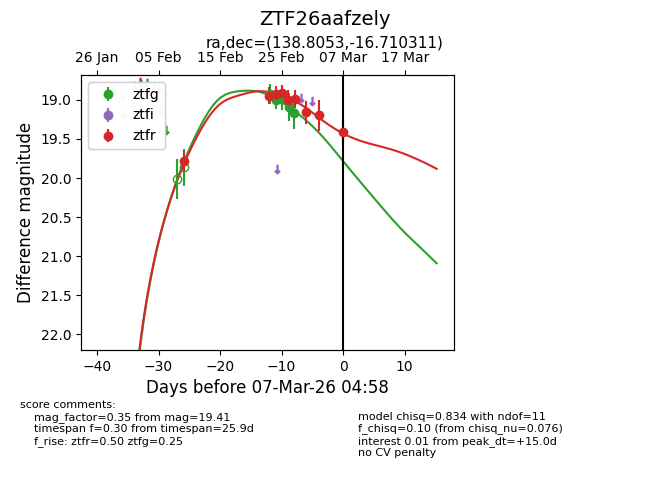
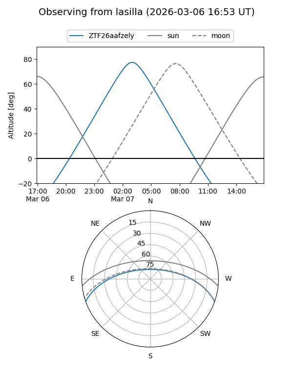
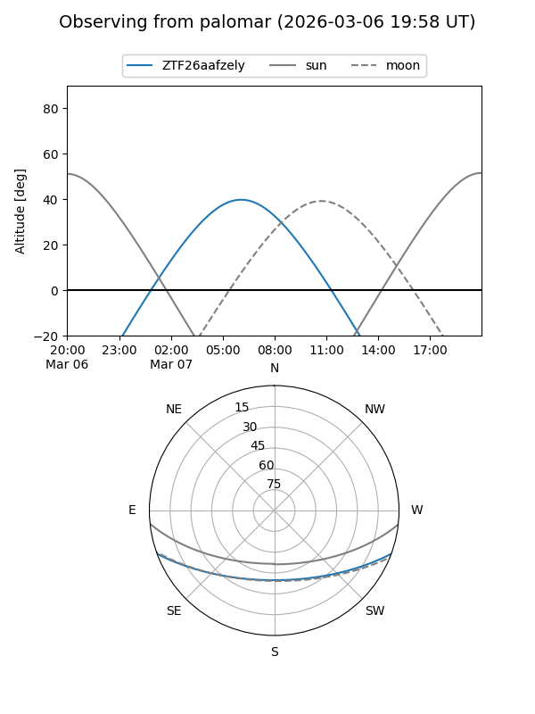
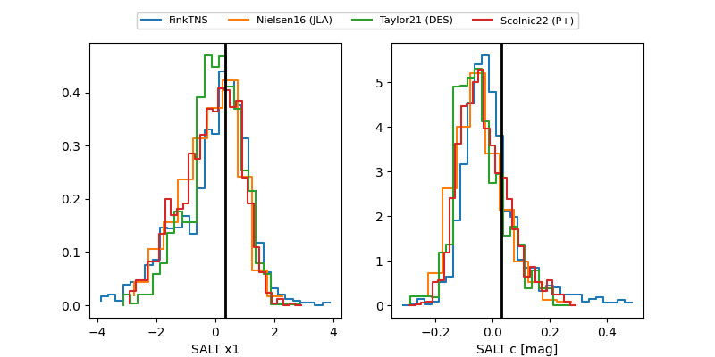

ZTF26aafzely
Target ZTF26aafzely at 2026-03-07 05:01
Aliases and brokers:
FINK: link
Lasair: link
ALeRCE: link
alt names
ZTF26aafzely (ztf,fink_ztf)
Coordinates:
equatorial (ra, dec) = 138.8053,-16.71031
equatorial (HMS+DMS) = 09:15:13.27,-16:42:37.12
galactic (l, b) = (246.3832,+21.67048)
Flags:
Photometry:
last ztfg=19.17, ztfr=19.41
5 ztfg, 9 ztfr detections
Lightcurve

Visibility


Additional plots
